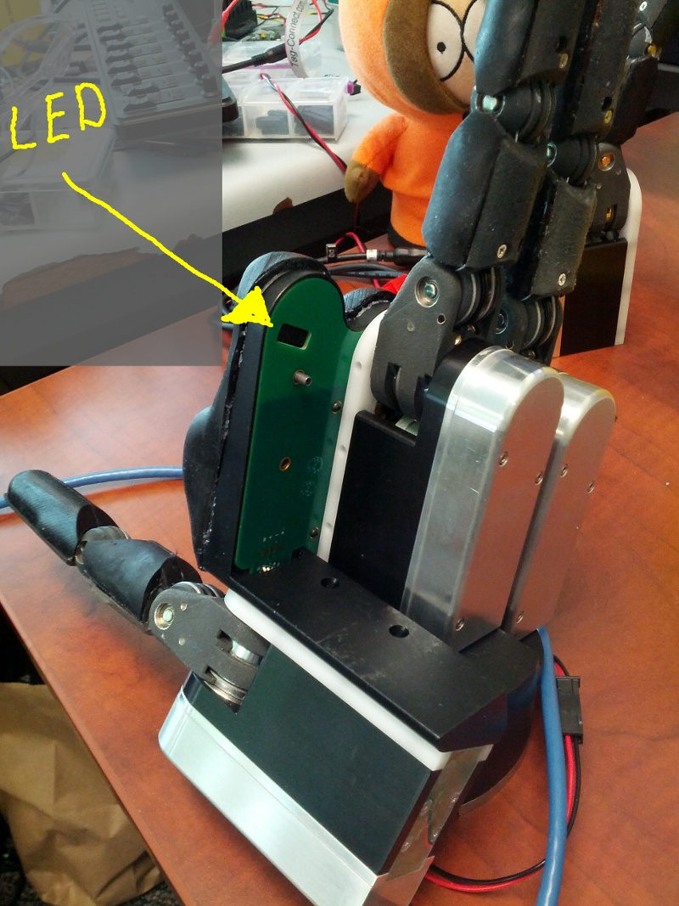

Troubleshooting the Palm Tactile Board
Palm tactile sensing is provided by a rigid-flex board that follows the curve of the front face of the hand.
The first step in debugging this functionality is to see if the palm board is receiving power.
There is a cutout in the upper corner of the back of the hand frame, near the top of the index finger socket, that provides a JTAG header for the palm tactile board. There is a LED located very close to this JTAG header that blinks a few times during the boot cycle of the palm tactile board. This occurs approximately 20-25 seconds after power is applied to the hand frame itself.
The following photo illustrates the location of this LED. It is inside the hand frame, but is bright enough that it lights up the board on the back of the hand frame enough to be easily observable through it.
